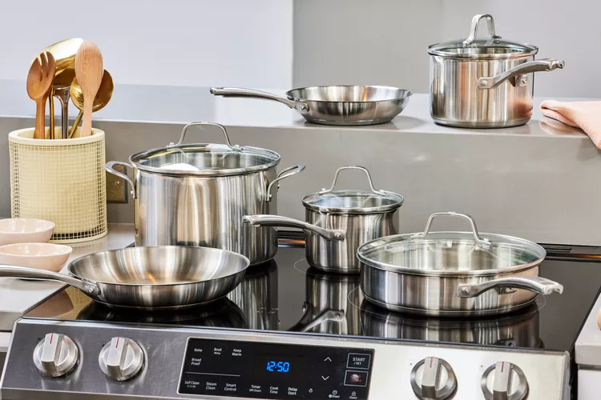

The Maize and Blue Cupboard is dedicated to ensuring equitable access to healthy, nutritious food for members of the University of Michigan community. They support students and staff who are
experiencing food insecurity, whether due to financial constraints or physical limitations in accessing groceries.
About the Pantry
See inside the pantry!
Recognizing the alarming rates of food insecurity among college students and staff, the Maize and Blue Cupboard provides a comprehensive support system. They offer more than just food; they
provide resources, educational opportunities, and compassionate support to help students develop skills for making informed decisions about nutrition and personal well-being.
Pantry Resources
The Maize and Blue Cupboard offers a variety of resources, including food, kitchen utensils and cooking supplies, and various other personal and household items. Each of these categories are
covered in more depth below.
Food Resources
The Maize and Blue Cupboard offers a comprehensive range of food resources to support students and staff.
Their food offerings include fresh produce to ensure access to healthy fruits and vegetables, dairy products for essential nutrition, and protein sources like meat. They also provide bread
for daily sustenance, frozen foods for convenient meal preparation, and a variety of shelf-stable foods such as rice, canned goods, and tuna to help individuals build a reliable food
pantry.
Kitchen and Cooking Supplies

The pantry offers pots, pans, and more!
Understanding that food access goes beyond just groceries, the pantry also provides essential kitchen and cooking supplies. Members can find dishes and silverware to eat their meals, pots
and pans for cooking, Tupperware for storing leftovers, cutting boards for food preparation, and knives for meal preparation.
These kitchen essentials ensure that individuals have the tools necessary to prepare and enjoy their meals comfortably.
Personal and Household Items
The Maize and Blue Cupboard recognizes that personal care and household maintenance are crucial for students' well-being. They offer a range of personal and household items including trash
bags, toilet paper, and cleaning supplies to help maintain a clean living environment.
Additionally, they provide hygiene products to support personal care, school supplies to assist with academic needs, and even baby items to support students with families, ensuring
comprehensive support for the University of Michigan community.
How to Access Services
Shopping at the Maize and Blue Cupboard is by appointment only. To access the food pantry's resources: